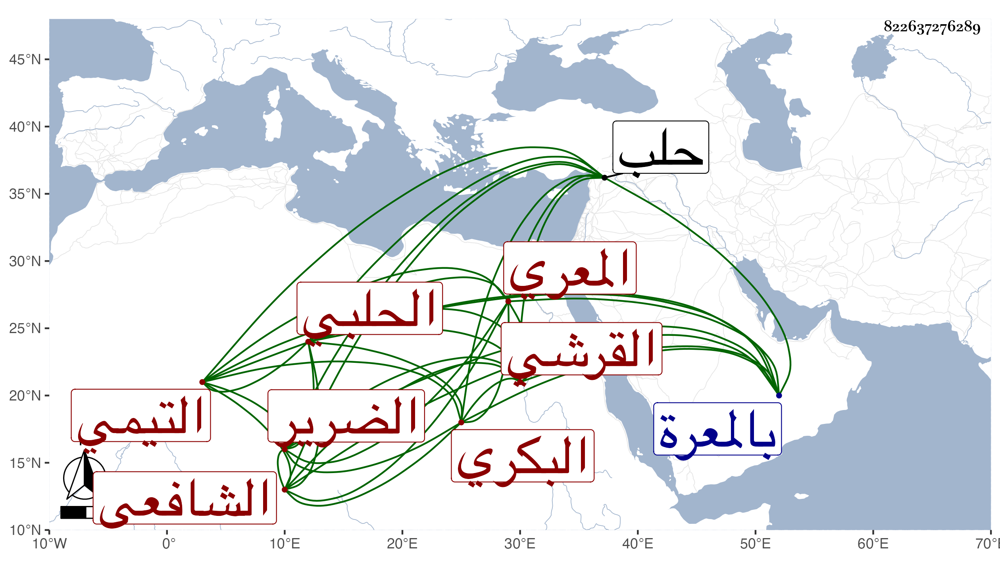

0902Sakhawi.DawLamic.ITO20230111-ara1.EIS1600.822637276289
Biography ID: 822637276289
1023
علي بن محمد بن عبد الخالق بن أحمد بن أبي بكر بن محمد بن أبي الفوارس ابن علي بن أحمد بن عمر بن قطامي العلاء بن الشمس بن النجم القرشي التيمي البكري المعري ثم الحلبي الشافعي الضرير ويعرف بابن الوردي لكون جده الأعلى أبي بكر أخا لجد الشيخ زين الدين عمر بن مظفر بن عمر بن محمد بن أبي الفوارس . ولد في نصف شعبان سنة إحدى وسبعين وسبعمائة بالمعرة وسمع من الشهاب بن المرحل وكان يقول أنه سمع من لفظ خال أبيه الشرف أبي بكر ابن عمر بن الوردي البهجة لأبيه بسماعه من ناظمها بل ابن الوردي عم جد أبيه أحمد كما قدمناه أيضا ، وتفقه بالشرف المذكور والسراج عبد اللطيف الفوي وأذن له بالإفتاء والتدريس وكذا أخذ الحاوي عرضا عن ابن الركن بل تفقهه به ممكن أيضا ، وحدث وسمع منه الفضلاء ، وكان إماما عالما محققا متقنا مفننا غاية في الذكاء وسرعة الجواب حافظا للحاوي مجيدا لاستحضاره عارفا به مستحضرا لغالب البهجة ذا نظم حسن بحيث أنه لما رأى في شرح البهجة للولوي اعتراضه على ناظمها في إسقاطه من أصل الحاوي مالورد المقترض القرض بأحسن منه في غير بلده من غير شرط ذهولا قال :
| قرض بلا شرط يجوز أن يرد | أجود أو أكثر في غير البلد |
ثم وجد بنسخة أخيرة من البهجة بخط ناظمها وفيها :
| وإن يكن من غير شرط أقرضا | فرد في قطر سواه أو قضى |
| أجود أو أكثر لم يحرم ولا | يكره بل يندب في تين كلا |
وكان الزيني زكريا وقف عليهما لشرحه لهما ، ورغبة في مجالس العلم بحيث لازم البرهان الحلبي بعد انحرافه عنه وكثرت استفادته منه وسماعه عليه وتأسفه على ما فاته منه ، وقد تكسب بالشهادة وقتا فلما تلفت عينه في الفتنة بسبب كشفهم رأسه حتى صار لا يبصر بها إلا قليلا وكانت الأخرى تالفة قبل ذلك لجدري عرض له بل بلغني أن تلفها من وقت الولادة فإن أمه كانت تستقي الماء على بئر فأدركها المخاض فخشيت من سقوطه في البئر فمالت على الحجر وضمته هو والمولود فصدعت رأسه بأماكن وأدى جبرها لتلف عينه عند كشفه ولزم من ذلك أن صار ضريرا ترك والتمس بعد من العلاء بن خطيب الناصرية أن يقرر له راتبا في وقف العميان فنازعه في ذلك فأثبت بذلك محضرا . ومات في ذي الحجة سنة تسع وأربعين بحلب ودفن بمقبرة الشهداء الصالحين قريبا من قبر عم جده المشار إليه الذي قبلي المقام الخليلي ولذا يقال في تعريفها خارج باب المقام رحمه الله وإيانا .
